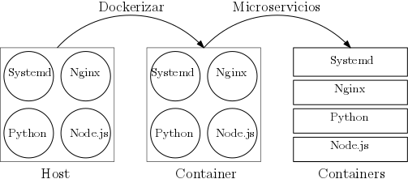

2. Arquitecturas de Microservicios
El concepto de microservicios tiene sus orígenes en la arquitectura SOA (Service Oriented Architecture). SOA se basa en el antiguo principio de “divide y vencerás”, y sostiene un modelo distribuido para el desarrollo de aplicaciones frente a soluciones clásicas más monolíticas. Es muy difícil pensar en Microservicios y no tener asociada la idea de Contenedores, si bien, la relación no se produce también extrictamente a la inversa; existen casos de uso de Contenedores perfectamente operativos que carecen de la arquitectura de microservicios.
2.1 Arquitecturas SOA
Una arquitectura basada en SOA debe seguir una serie de principios para ser exitosa. Estos principios son:
- Cada servicio debe ofrecer un contrato para conectarse con él. Un caso muy común es un servicio que ofrece una API REST. Dicha API debe siempre mantener compatibilidad con versiones anteriores, o gestionar versiones de sus endpoints cuando se producen incompatibilidades, pero es fundamental no romper el contrato con otros servicios.
- Cada servicio debe minimizar las dependencias con el resto. Para esto es fundamental acertar con el scope (alcance) de un servicio. Una indicación de que el scope no es el adecuado es cuando se producen dependencias circulares entre los servicios.
- Cada servicio debe abstraer su implementación. Para el resto de servicios debe ser transparente si un servicio usa un backend u otro para la base de datos o si ha hecho una nueva release.
- Los servicios deben diseñarse para maximizar su reutilización dado que la reutilización de componentes es una de las ventajas de una arquitectura SOA.
- Cada servicio tiene que tener un ciclo de vida independiente, desde su diseño hasta su implantación en los entornos de ejecución.
- La localización física de donde corre un servicio debe ser transparente para los servicios que lo utilizan.
- En lo posible, los servicios deben evitar mantener estado.
- Es importante mantener la calidad de los servicios; deben estar bien testados. Un servicio con continuas regresiones puede afectar a la calidad final percibida por el resto de servicios que hacen uso de él.
2.2 Microservicios
Teniendo en cuenta estos principios, el concepto de microservicios es un poco la manera que se ha puesto de moda para referirse a las arquitecturas SOA, pero incidiendo más aún en que la funcionalidad de dichos servicios debe ser la mínima posible. Una medida bastante extendida es que un microservicio es un componente que debería ser desarrollable en unas dos semanas.
Las ventajas de una arquitectura basada en microservicios son las siguientes:
- Son componentes pequeños que agilizan los procesos de desarrollo de software y son fáciles de abordar por un equipo de desarrolladores.
- Son servicios independientes, si un microservicio falla no debería afectar a los demás.
- El despliegue de un microservicio a producción es más sencillo que el de una aplicación monolítica.
- Los microservicios son altamente reutilizables.
- Los microservicios son más fáciles de externalizar.
2.3 Relación entre Docker y Microservicios
- El despliegue de un microservicio suele ser es más sencillo que el de una aplicación monolítica debido a su mayor sencillez y sus menores dependencias.
- Por otra parte, los microservicios agilizan los procesos de desarrollo del software permitiendo casos de uso donde podemos hacer varios despliegues de distintos microservicios al día.
Es por tanto casi imposible concebir una arquitectura basada en microservicios sin la automatización de los procesos de integración y despliegue continuo. - Ésta es la principal relación entre Docker y los microservicios ya que Docker es una herramienta excepcional para la automatización de estas tareas. Docker simplifica la automatización de construir una imagen, distribuirla y ejecutarla en cualquier máquina independientemente de la infraestructura. Esto significa que podemos construir una imagen en nuestros entornos de integración continua, correr nuestras pruebas contra ella, distribuirla en nuestro servidores de producción y por último, ejecutarla en un contenedor. Y todo esto ejecutando simplemente unos cuantos comandos de docker.
Dicho esto, una arquitectura de microservicios es sólo un modelo de desarrollo de software que mal aplicado puede traer enormes quebraderos de cabeza.
- Los microservicios adquieren más importancia cuando tenemos equipos de ingeniería muy grandes, que interesa dividir en subgrupos y cada uno de ellos se encargue de uno (o unos pocos) microservicios.
- Además, el proceso de migrar una arquitectura monolítica a una arquitectura basada en microservicios debe ser planeado con cautela.
- Se recomienda transferir un trozo de lógica a un sólo microservicio a la vez, ya que una arquitectura basada en microservicios puede implicar un cambio de las herramientas utilizadas para el despliegue, monitoreo y sistemas de logging de nuestras aplicaciones.
Nos gustaría destacar que Docker se adapta perfectamente a una arquitectura basada en microservicios, pero sería posible tener una arquitectura basada en microservicios sin usar contenedor, y por supuesto, es perfectamente posible usar Docker en una arquitectura más monolítica o no basada en microservicios.
Imaginemos el caso de una aplicación legacy monolítica. Solo por el hecho de meter esta aplicación dentro de un contenedor, tal y como es, sin cambios en su código fuente, nos vamos a favorecer de muchas de las características de docker, como son:
- Facilidad de levantar entornos locales de desarrollo
- Portabilidad para correr nuestro contenedor en un Mac, en un Ubuntu, en integración continua o en un servidor de producción
- Facilidad para distribuir las imágenes de nuestra aplicación
Dicho de otra manera:
No es necesario modificar nuestras aplicaciones de toda la vida para adaptarlas a Docker, Docker se adapta a nuestras aplicaciones tal y como son
Hay un conjunto de buenas prácticas para seguir una arquitectura basada en microservicios, pero solo son eso, buenas prácticas que dependiendo del contexto conviene o no aplicar, si no serían axiomas de desarrollo.
Mostramos esta idea en la siguiente figura:

- Parte izquierda
- Aplicación monolítica corriendo en un host con cuatro procesos principales:
systemd,nginx, un procesopythony un procesonode.js.
- Aplicación monolítica corriendo en un host con cuatro procesos principales:
- Parte central
- El proceso de dockerizar sería construir una imagen de docker con la misma arquitectura de procesos
- Esto nos permite hacer
pushypullde esta imagen de una manera muy sencilla, y correrla en cualquier entorno de ejecución con total garantía.
- Esto nos permite hacer
- Parte derecha
- Más tarde, podemos separar cada proceso en su propio microservicio, que sería la parte de la derecha, donde cada proceso corre en un contenedor independiente.
Lo que se quiere destacar es que la fase de dockerizar, aunque luego no se adopte una arquitectura de microservicios, es de enorme valor en sí mismo. También que saltarse este paso y tratar de pasar de la arquitectura de la derecha a la de la izquierda en un solo paso suele ser una garantía para buscar problemas.